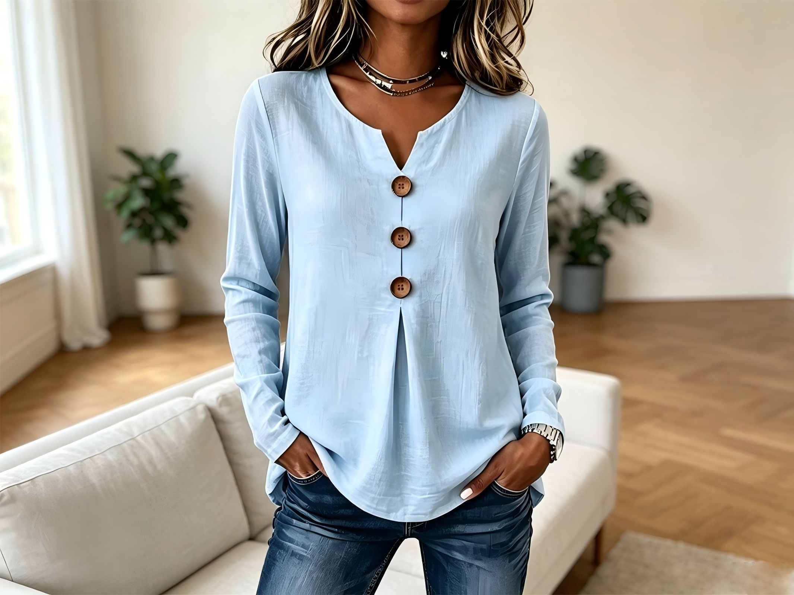
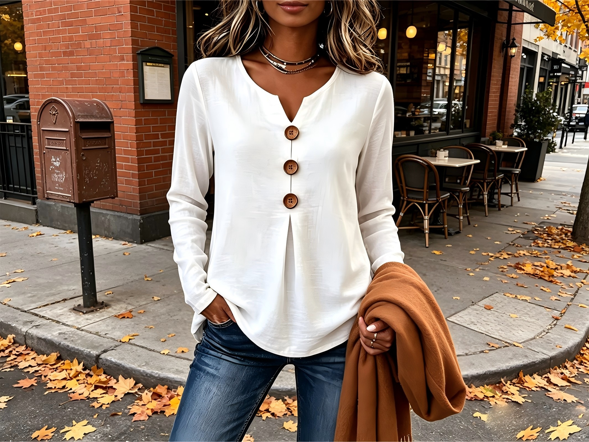

ELEGANCE A KOMFORT
Vyvolává nákupní horečku na evropském trhu! Pohodlná halenka pro ženy středního věku 2026 – dokonalé spojení elegance a módy!
Nevzdávejte se módy kvůli věku ani postavě.
Tato elegantní dámská košile s dlouhým rukávem vyniká čistým, jednoduchým střihem a příjemně měkkým materiálem, který podtrhuje přirozený a sebevědomý půvab zralé ženy. Volnější, ale stále dobře tvarovaný střih jemně lichotí postavě a hodí se jak pro každodenní nošení, tak do práce nebo na neformální setkání.
Jednoduché řešení výstřihu, plynulé linie a snadno kombinovatelný styl spojují pohodlí s vytříbenou elegancí. I bez složitého stylingu vytvoří čistý, sofistikovaný a zároveň uvolněný vzhled.
Elegance není otázkou věku a pohodlí může být stejně stylové.

Moderní móda často zapomíná na ženy po padesátce. Mnohé letní šaty jsou buď příliš mladistvé, příliš tuhé, nebo vyrobené z materiálů, které neposkytují dostatečnou oporu postavě.
Značka Corvolla vytvořila model, který neskrývá tvary zralé ženské postavy, ale elegantně je zvýrazňuje a harmonicky tvaruje.
Materiál 3D Waffle-Knit zajišťuje stabilní, a přitom lehkou a splývavou strukturu: nelepí se na tělo, snadno si zachovává hladký vzhled, dobře dýchá a pomáhá udržet elegantní vzhled po celý den.

1. Třírozměrný úplet Waffle-Knit – přirozená opora ve stylu haute couture
Na rozdíl od běžných letních látek, které se snadno lepí na tělo a nedrží tvar, materiál 3D Waffle-Knit vyniká skvělým splýváním a hustou, strukturovanou konstrukcí.
Funguje jako neviditelná architektonická kostra, která přirozeně kopíruje linii ramen, krku a postavy – zvýrazňuje charakter a eleganci, aniž by tělo jakkoliv omezovala.
Díky výjimečné schopnosti přizpůsobit se různým typům postav pomáhá vyvážit proporce a vytváří hladkou, harmonickou, zeštíhlující a elegantní siluetu.
2. Minimalistický, dekonstruovaný výstřih – opticky prodlužuje postavu
Odpustili jsme si tuhé límečky i zbytečné přízdoby a nahradili je minimalistickým výstřihem typu Open Neckline, založeným na jediné čisté a elegantní linii.
Toto řešení poskytuje volnost v oblasti krku a klíčních kostí a zároveň jemně, opticky prodlužuje linii ramen a krku.
Vytváří jemnou atmosféru quiet luxury (tichého luxusu) a podtrhuje inteligentní, ženskou eleganci.
3. Každodenní samo-regulační komfort – volnost bez mačkání
Unikátní mikroporézní struktura materiálu inspirovaná plástvemi medu vytváří přirozené proudění vzduchu mezi pokožkou a látkou, čímž rychle odvádí teplo a vlhkost.
Po celý den umožňuje pokožce dýchat, a zároveň vyniká skvělou odolností proti mačkání, takže nevyžaduje časté žehlení.
Ať už se chystáte na pracovní schůzku nebo dlouhou cestu, vždy vám zajistí úhledný a vkusný vzhled.
4. Svislé linie inspirované zlatým řezem – efekt vyšší a štíhlejší postavy
Designéři díky precizním proporcím střihu a svislým liniím změnili vizuální těžiště siluety a směřují pohled přirozeně směrem nahoru.
Bez nutnosti silného zvýrazňování pasu vytvářejí šaty efekt prodloužené a harmoničtější postavy.
Celkový vzhled působí proporčněji, elegantně a uvolněně.
Skutečná elegance nespočívá v napodobování mládí
Skutečná elegance spočívá v tom, že umíte ocenit sama sebe takovou, jaká jste právě teď. Každé životní období má svou vlastní sílu, krásu a jedinečný půvab.
Kouzlo této košile se ukrývá v dokonale vyvážených detailech: čistém a elegantním výstřihu, přirozeně splývavé siluetě a volnějším střihu, který nepůsobí objemně. Jemně lichotí postavě, opticky prodlužuje a zjemňuje celkovou siluetu a vytváří ideální rovnováhu mezi pohodlím a vytříbeným stylem.
Oficiální kanál přímého prodeje
Překonejte omezení spojená s velikostí a věkem
Že oblečení by mělo být pro ženské tělo oporou, nikoliv další výzvou.
Od velikosti S až do 4XL bouráme neviditelné bariéry, které ženy kvůli velikosti a věku často omezují, aby si každá zralá žena mohla znovu užívat volnost, eleganci a sebevědomí.
Objednávkou přímo na oficiálních stránkách se vyhnete drahým zprostředkovatelům a získáte poctivou, výhodnou přímou cenu.
Speciální nabídka
Objednejte nyní přímo na oficiálních stránkách s okamžitou slevou!
Zkontrolujte dostupnost na skladě a získejte 45% slevu hned 👉🏻